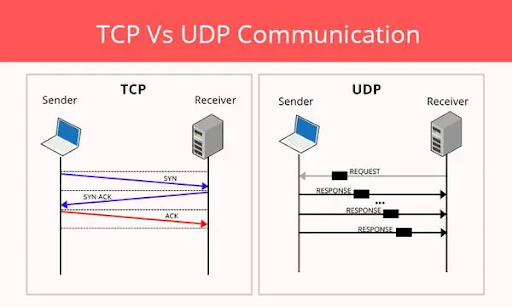

Webove aplikace 6.10
Zapisky
- DNS - Domain Main System -> hierarchický, decentralizovaný systém doménových jmen
- ISP - Internet Service provider - firma nebo organiace co zprostredkovava pristup do Internetu
- Protokoly:
- TCP - Transmission Control Protocol -nejpouzivanejsi protokol, mohou pouzivat pocitace, ktere mohou obousměrně přenášet data.
- UDP - User Datagram Protocol - 8 bytovy protokol, jednodusi nez TCP, nezarukuje doruceni dat
- Porovnani TCP a UDP
- TCP - potrebuje ustanovene spojeni pred prenosem
- UDP - nepotrebuje ustanovene spojeni pred prenosem
- TCP - doruceni je zaruceno
- UDP - doruceni je nezaruceno
- TCP - pomalejsi, ale doruci vsechna data
- UDP - rychlejsi, ale riziko nedoruceni vsech dat 
- HTML - Hypertext Markdown Language
- V HTML rozlisuje znacky parove (body, head, p , h) a neparove (img, input, br)